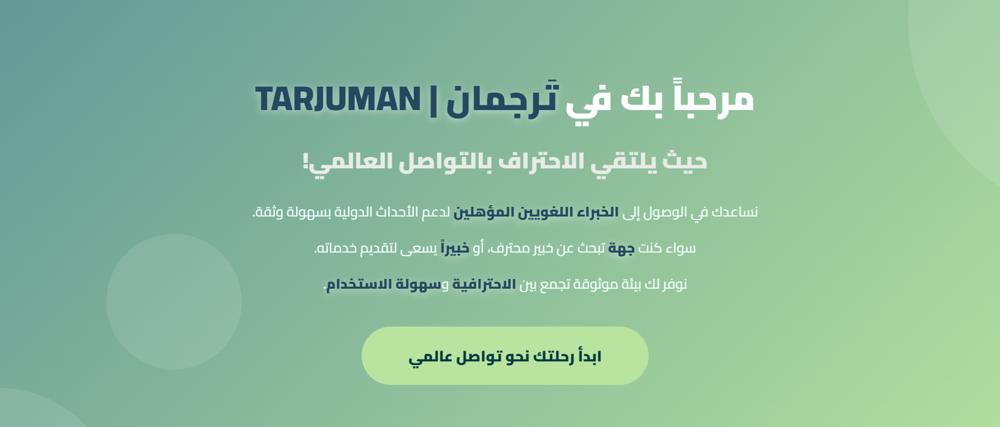

ترجمان TARJUMAN
منصة رقمية صُممت لربط الجهات المشاركة في الأحداث الدولية بخبراء لغويين سعوديين مؤهلين. تدعم المنصة البحث عن الخبراء، اعتماد الحسابات، إدارة الطلبات، التقييمات والشكاوى، وآلية حجز تعتمد على العربون.

فكرة المشروع
ترجمان منصة رقمية تربط الجهات المشاركة في الفعاليات الدولية بخبراء لغويين سعوديين مؤهلين لتسهيل الوصول إلى الكفاءات المناسبة بحسب اللغة والتخصص والمدينة والتقييم تعالج المنصة تحدّي العثور على مترجم أو خبير لغوي موثوق وتدير رحلة التعاون من البحث والتواصل إلى التقييم ضمن تجربة واضحة ومنظمة للطرفين ومن خلال ترجمان نُسهم في تمكين الكفاءات الوطنية وتعزيز حضورها في الفعاليات الدولية مع دعم التواصل الفعّال بين الثقافات
ترجمان خبرات لغوية سعودية تصل إلى العالم
المزايا الرئيسية
- اعتماد الحسابات وإدارة الملفات الشخصية.
- البحث عن الخبير حسب اللغة والتخصص والمدينة والتقييم.
- إدارة التقييمات والشكاوى.
- متابعة الطلبات بين الجهات والخبراء.
تحليل النظام
تضمن المشروع تحليل المتطلبات وتحديد تدفقات العمل وأدوار المستخدمين ونمذجة قاعدة البيانات وتصميم الواجهات لبناء رحلة خدمة رقمية متكاملة.